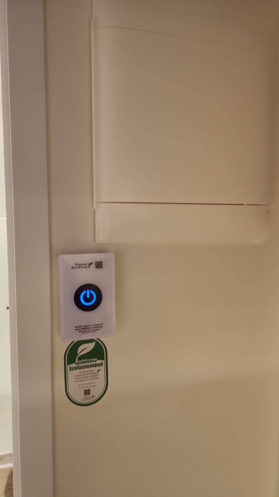
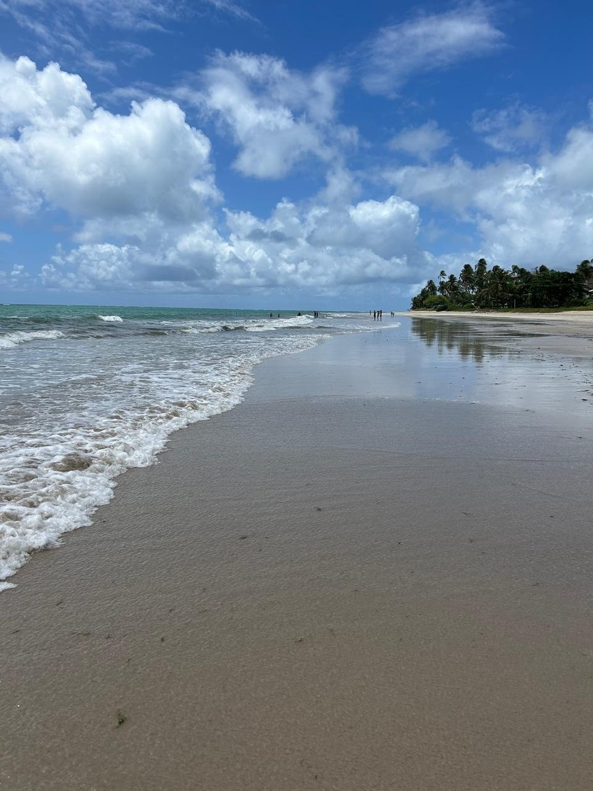
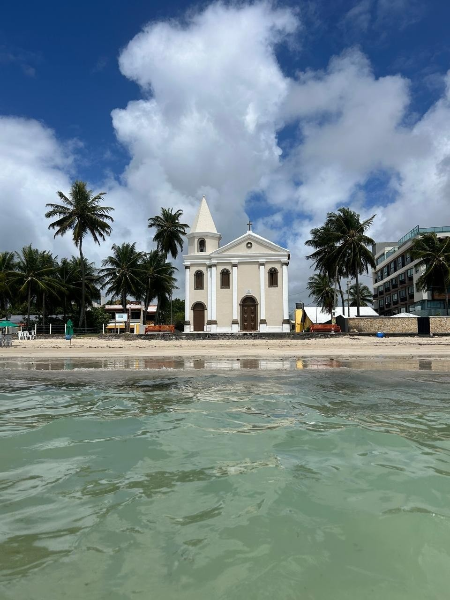
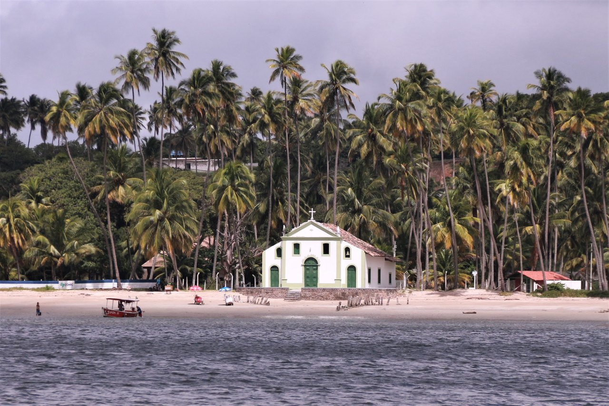
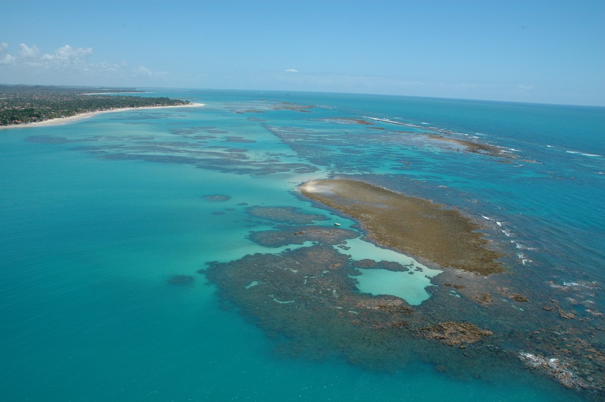
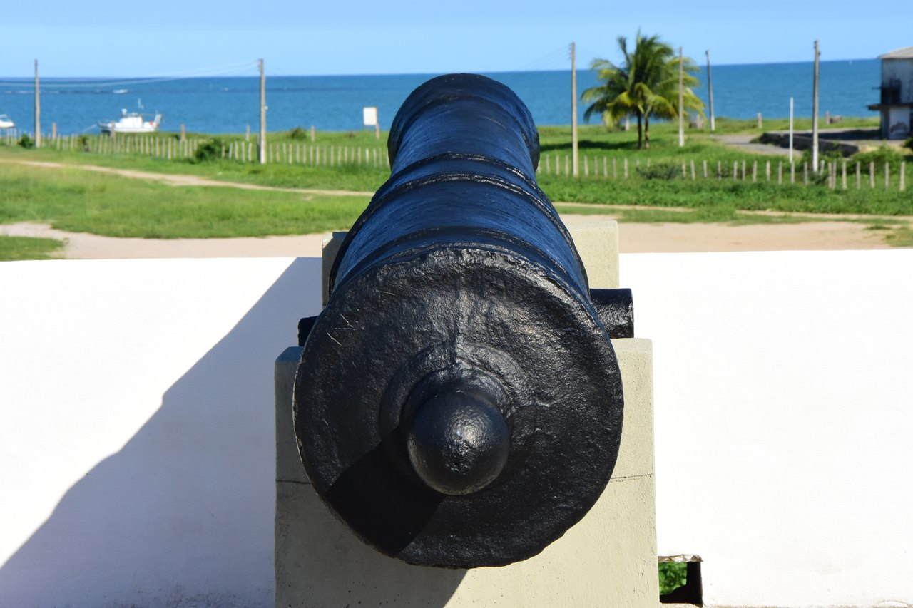
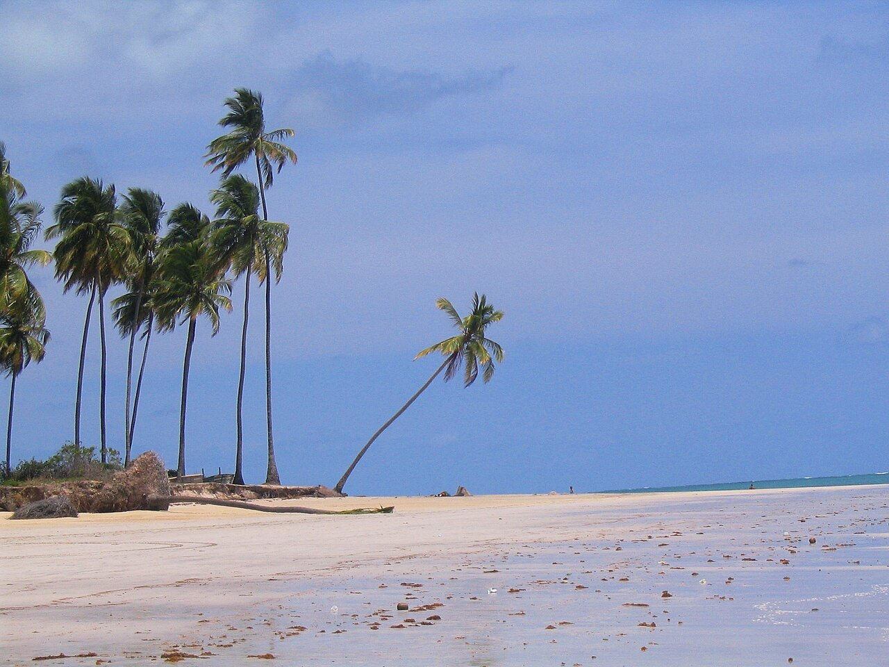
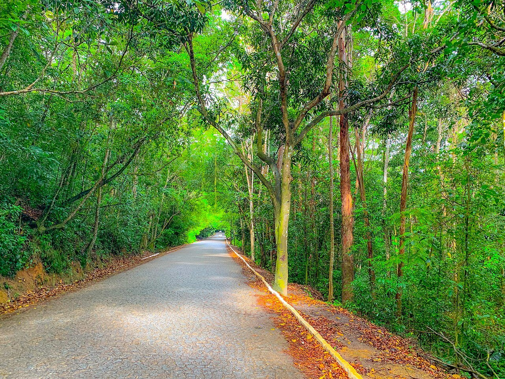

Quarto climatizado
Ar-condicionado split, cama de casal com cabeceira estofada e iluminação aconchegante.
Tamandaré · Pernambuco
Seu flat pertinho da Vila do Padre Arlindo. Aqui você encontra tudo o que precisa para aproveitar a estadia: como funciona o flat, a energia, as regras e o melhor de Tamandaré.
Sejam bem-vindos · Welcome
O mesmo manual que fica impresso no flat, em português e em inglês. Toque na página para ampliar.
Por que você vai gostar
Ar-condicionado split, cama de casal com cabeceira estofada e iluminação aconchegante.
Churrasqueira elétrica, cervejeira e mesa redonda para quatro pessoas na varanda envidraçada, com vista. Perfeita para um churrasco ou um jantar à noite.
Air fryer, micro-ondas, geladeira, sanduicheira, liquidificador, louças, taças e potes organizados.
TV LG com apps de streaming na sala, de frente para o sofá.
Box de vidro, bancada em granito e amenidades à disposição.
Na Praia de Campas, bairro Nova Tamandaré, bem próximo ao centro e à Vila Padre Arlindo.
Piscina no terraço do prédio, com vista para a Praia de Campas. Área de uso comum.
Galeria
Use os filtros para ver cada ambiente. Toque numa foto para ampliar.
Tour em vídeo · 1 minuto
A praia em frente ao prédio, a varanda gourmet, o quarto, a cozinha e os passeios por perto. Dê o play e veja tudo antes de chegar.
Fotos da praia e da região: Wikimedia Commons (créditos no fim do vídeo). Trilha sonora original.
Espaço compartilhado do condomínio
O quarto e a cozinha são só seus. A área de lazer é de uso comum de todos os moradores e hóspedes do condomínio.
Importante — leia ao chegar

O flat tem um sistema de economia de energia: os ar-condicionados só funcionam depois que você aperta o botão ao entrar.
Instruções detalhadas em breve.
Para todos aproveitarem
Horários a confirmar.
A entrada é por senha, que é trocada com frequência. Peça a senha atual ao Rogério pelo WhatsApp (81) 99963-3237.
Respeite o horário de silêncio do condomínio, principalmente à noite.
Não é permitido fumar dentro do flat.
Regras de visitantes a confirmar com o condomínio.
Após a sua saída fazemos a limpeza completa. Só pedimos, com carinho, que não abusem dessa gentileza: deixar o flat em ordem ajuda a mantê-lo sempre impecável.
Esvazie a geladeira e o freezer (o que fica lá acaba estragando), descarte o que não for do flat, confira seus pertences e deixe o ar-condicionado e as luzes desligados.
Se algo quebrar ou for danificado sem querer, avise o Rogério na hora pelo WhatsApp (81) 99963-3237. Assim resolvemos rápido e sem complicação.
Cuide-se
Confira se a porta travou ao sair e ao dormir, e não compartilhe a senha de acesso. Feche as janelas e a porta da varanda quando sair.
Não sobrecarregue tomadas com benjamins. Desligue a air fryer e a sanduicheira da tomada após o uso.
Na varanda e na piscina, crianças sempre acompanhadas de um adulto.
Use protetor solar, beba água e respeite as bandeiras e a maré nas praias.
Saia pela escada (nunca pelo elevador), feche a porta ao sair e ligue 193.
Não deixe objetos de valor à vista na varanda ou no carro.
Como chegar
Bem próximo ao centro, no bairro Nova Tamandaré, na Praia de Campas.
Mar de Campas Beach Flat
R. Eça de Queiroz, 39 · Nova Tamandaré
Tamandaré-PE · CEP 55578-000
Explore
Uma das costas mais bonitas de Pernambuco, com águas mornas e piscinas naturais. Toque em Como chegar para ver a rota a partir do flat.

Em frente ao prédioMar calmo, ambiente tranquilo e piscinas naturais entre os recifes na maré baixa. Barracas com peixe frito e caldinho, e saída de passeios de barco.
Foto: arquivo do flat

150 m do prédioA igreja à beira-mar de Campas, que inspirou o letreiro do prédio. Faz parte da Rota da Fé de Tamandaré e é cenário da Festa de São Pedro, com procissão de jangadas.
Foto: arquivo do flat
Complexo a céu aberto na R. do Sesi, em Campas: restaurantes, lojas, artesanato local, food trucks, beach tennis, shows e capela. Inaugurado em 2023 em homenagem ao pároco da cidade; parte dos aluguéis ajuda famílias da região.
Vídeo: Fora de Casa - Mas em Casa (YouTube)

PraiaCoqueirais, águas mornas e a Igrejinha de São Benedito, do século XVIII, à beira-mar. Uma das praias mais famosas do Brasil; passeios de catamarã saem da região.
Foto: Robson Romeiro / Wikimedia Commons (CC BY-SA 4.0)

MarOs recifes da APA Costa dos Corais formam piscinas de água cristalina na maré baixa. Confira a tábua de marés antes de ir e não pise nos corais.
Foto: Peld Tams / Wikimedia Commons (Public domain)

HistóriaFortificação do século XVII na Praia do Forte, com farol, capela e vista para a baía. Patrimônio ligado ao Almirante Tamandaré.
Foto: Forte Santo Inácio / Wikimedia Commons (CC BY-SA 4.0)

CentroA orla do centro, com quiosques e comidas típicas. Perto dali, a Boca da Barra tem águas calmas, boas para famílias com crianças.
Foto: Bpiereck at English Wikipedia / Wikimedia Commons (CC BY-SA 3.0)

NaturezaMata Atlântica preservada e a Cachoeira de Saltinho, na zona rural de Tamandaré. Um passeio diferente para um dia nublado.
Foto: Cesar Vieira / Wikimedia Commons (CC BY-SA 4.0)
Valores e horários mudam com a temporada e a maré: confirme direto com a empresa.
Informação turística oficial
Secretaria de Turismo e Cultura de Tamandaré · Av. José Bezerra Sobrinho, s/n · seg a sex, 8h às 14h
(81) 98512-1231 · turismo@tamandare.pe.gov.br
turismodetamandare.com (AHPREST) · Instagram @visitcarneiros
Precisa de ajuda?
Água mineral: peça indicação ao Rogério.
Telefones de comércio vêm de listas públicas e podem mudar. Na dúvida, fale com o Rogério.